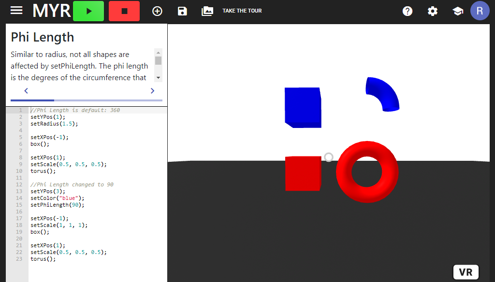
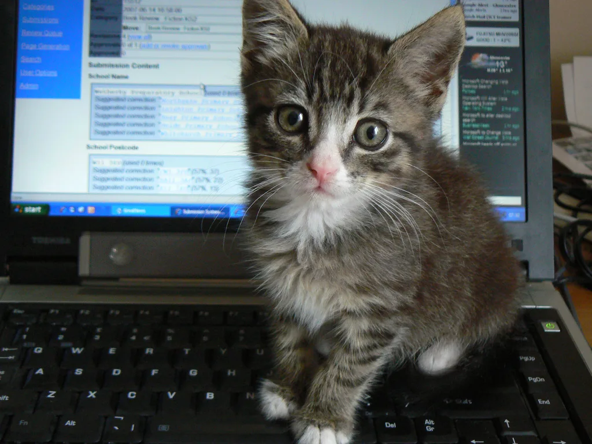

I'm Ryan Maradiaga
I'm a Computer Science undergraduate student at University of Massachusetts Lowell. I currently work as a Front-end developer in one of the University's labs. I aspire to be a Full-stack web developer and create intuitive and instructive applications.
| Skills & Experience | ||
|---|---|---|
| ReactJS & Bootstrap | At my university, I work in a lab under the Engaging Computing Group. The project is called LearnMYR, and it is a coding environment that uses JavaScript and VR elements to teach K-12 students about the principals of Computer Science. Here is a link to the GitHub repository. |  | HTML & CSS | This entire page is created using HTML and CSS as a part of my Graphical User Interface class. Although the course is called GUI, we learn mostly about web development using HTML, CSS, JavaScript, and JQuery. I used an amazing cat image because you're already seeing my work on this website, but if you want the GitHub repository, here it is. | " width="500" height="320" /> |